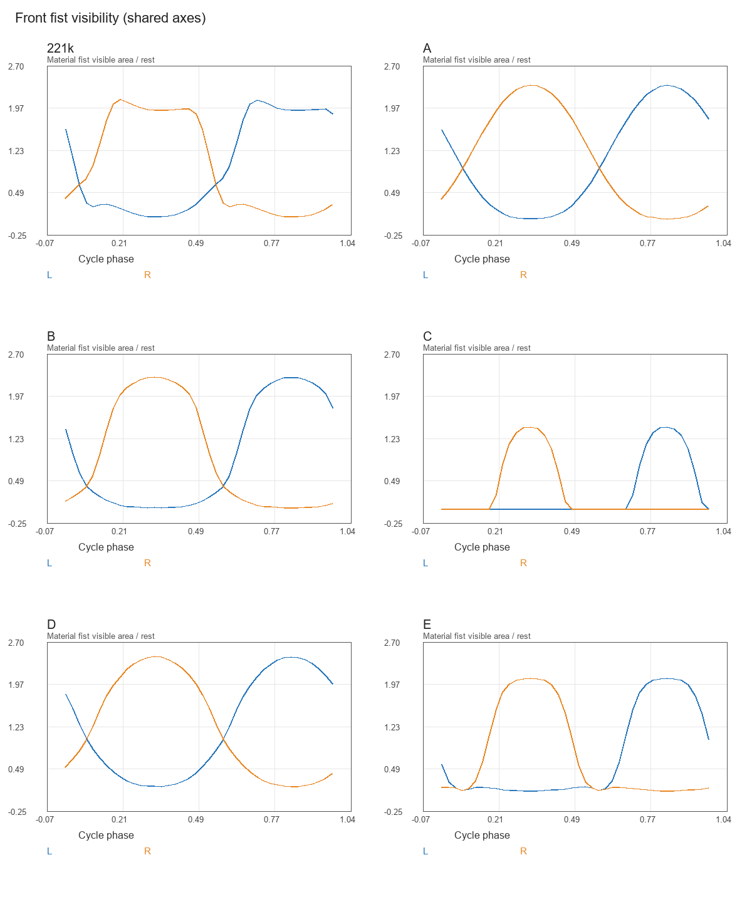
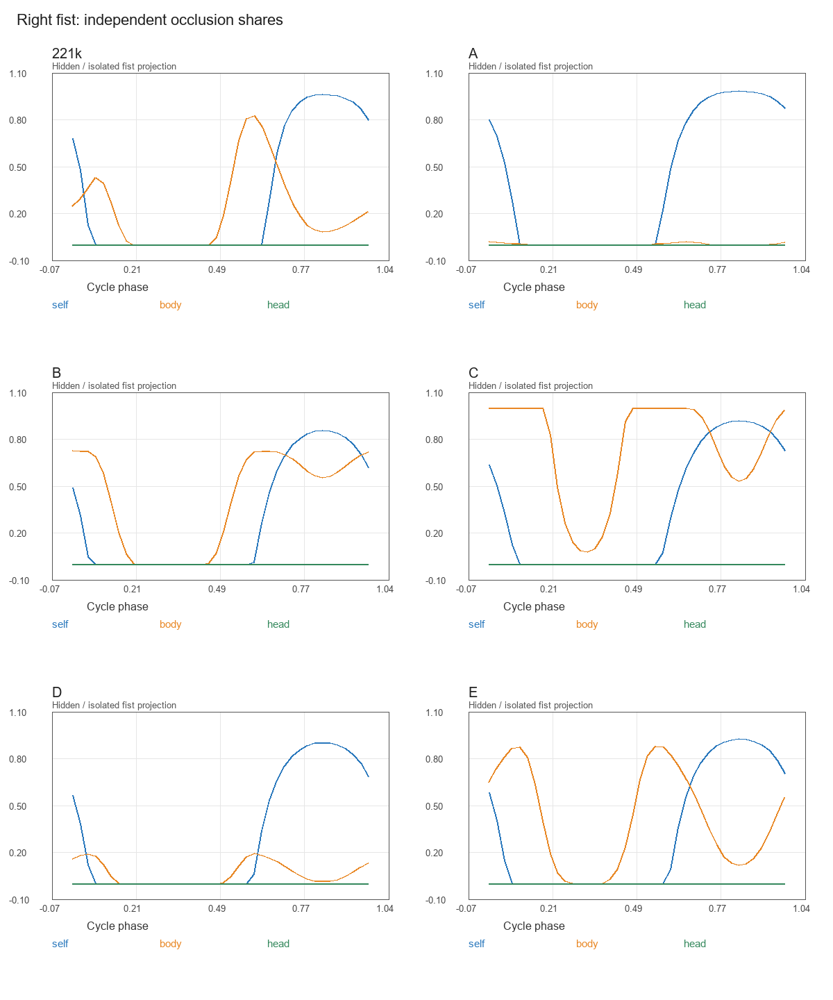
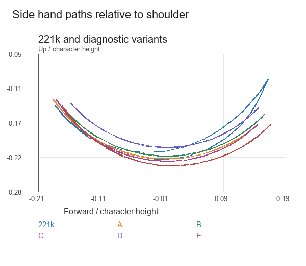

Shaded poses · selected study
Eight native poses in each view: front, oblique, side. These stills show the actual materials; they do not certify full-speed shaded playback.
Mozu motion study · 3 October 2026
Compare the current 221k run with five arm-only studies. The legs, body, head and tail retain the same motion. Start from the front, then check the side and oblique views.
View the shaded 221k baseline · All reviews
221k · current elbow pump
Actual 3D visibility masks: 40 frames at 60 fps per cycle. Colors distinguish limb regions; they are diagnostic colors. No frame interpolation is used. Shaded key poses appear below.
Loading the comparison…
Eight native poses in each view: front, oblique, side. These stills show the actual materials; they do not certify full-speed shaded playback.
Check the passing poses and the small hand shapes, as well as the extremes.
| Study | Change | Min fist / rest | Min forearm + fist / rest | Fist area jumps | Failed hard view checks |
|---|---|---|---|---|---|
| 221k | Current: elbow 20–70°, with curl | 7.2% | 63.3% | 16 | None |
| A | Almost straight: elbow 5° | 3.8% | 65.2% | 13 | V1 |
| B | Steady elbow: 45° | 2.5% | 53.2% | 20 | V4, V5 |
| C | 45° + inward path + rotated elbow plane | 0.0% | 23.9% | 12 | V1, V4, V5, V9 |
| D | 45° + wider outward arm placement | 18.8% | 78.9% | 12 | V1, V7 |
| E | 35° + mild inward path | 10.7% | 56.0% | 16 | V1, V9 |
Minimum areas span both arms and all 40 frames. A jump means an adjacent-frame area change above 20% of the same region's rest area, including the loop boundary; counts sum both arms. These are diagnostic measurements, not perceptual pass/fail standards.
Hard view checks cover the forward fist (V1), rear arm position (V4), contour connectivity (V5), head junction (V7), belly shape (V8) and swing envelope (V9). Raw failed checks remain failed. Constant elbows and phase-varying inward paths also expose limits in the inherited timing/constant-adduction tests.



A and D offer the clearest distinct directions: A removes the folding-elbow cue but changes the side run to a straight-arm style. D retains the most visible forearm area, with wider arms and about 12% less side hand travel. A steady 45° elbow alone (B) did not improve visibility; C and E introduce inward-path regressions.
Compare A and D, then choose the direction to refine. Neither is ready for adoption. V1 includes a forward-hand-over-belly pose requirement; its failure for A/D is a design conflict, not proof of a body collision. D also exceeds the front head-junction baseline by 2 pixels. The inherited paw–tail overlap and wider motion acceptance remain open.